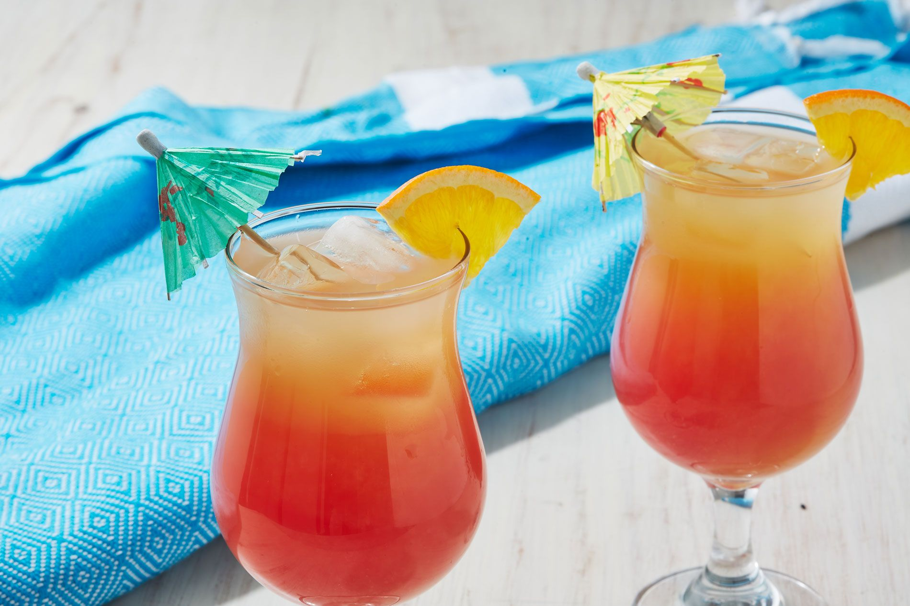

Sex On The Beach

Combine vodka with peach schnapps and cranberry juice to make a classic
sex on the beach cocktail. Garnish with cocktail cherries and orange
slices
Prep Time: 5 minutes
Cook Time: 5 minutes
Serves:2
Ingredients
- ice
- 50ml vodka
- 25ml peach schnapps
- 2 oranges, juiced, plus 2 slices to garnish
- 50ml cranberry juice
Optional Ingredients:
- glace cherries, to garnish
Directions
- Fill two tall glasses with ice cubes. Pour the vodka, peach schnapps and fruit juices into a large jug and stir.
- Divide the mixture between the two glasses and stir gently to combine. Garnish with the cocktail cherries and orange slices.